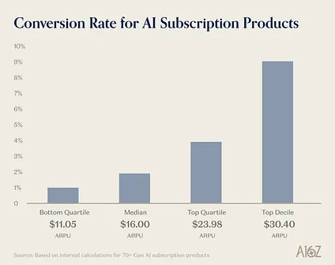
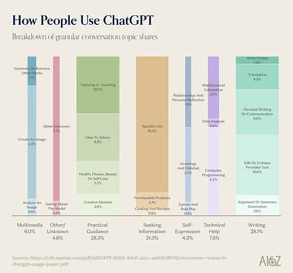
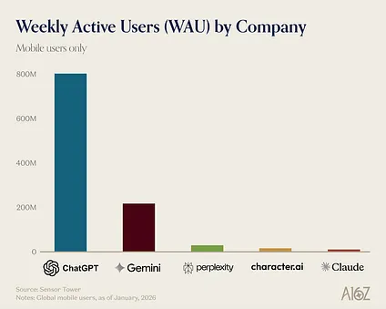

Of course they’re putting ads in AI
他们当然会把广告放进 AI 里
互联网是一个奇迹，它让机会、探索和连接变得人人可及。而支撑这个奇迹的，正是广告。正如 Marc 长期以来一直在说的：“如果你在原则上反对广告，你也同时是在反对广泛可及性。”广告就是我们还能拥有这些好东西的原因。
所以，上个月“OpenAI 计划向免费用户引入广告”的消息，大概是 2026 年（截至目前）“看似新闻、其实并不意外”的最大新闻。因为只要你一直在关注，线索其实到处都是。Fidji Simo 在 2025 年加入 OpenAI，担任 Applications CEO，很多人把这解读为“像她在 Facebook 和 Instacart 那样把广告体系搭起来”。Sam Altman 也在商业播客里多次预热广告上线。像 Ben Thompson 这样的科技分析师，更是几乎从 ChatGPT 发布之初就一直在预测广告会来。
但广告不令人意外的最核心原因，是它本来就是把一项互联网服务带给最多用户的最佳方式。
LLM 用户的长尾
“Luxury beliefs（奢侈信念）”这个词前几年开始流行，指的并不是真正基于原则的立场，而是出于姿态而采取的立场。科技圈里这种情况很多，尤其在广告话题上。围绕“卖数据！”“追踪！”“收割注意力！”这类关键词，人们常常上纲上线，但互联网从来都是靠广告运转，而且大多数人也接受这种模式。互联网广告用几乎可以忽略的代价——偶尔看几条猫咪连体衣或室内水培花园广告——创造了历史上最重要的“公共品”之一。那些假装这是一件坏事的人，通常是在向你证明点什么。
任何熟悉互联网历史的人都知道，广告是平台最终实现商业化的核心路径：Google、Facebook、Instagram、TikTok 都是先免费，再靠定向广告找到变现方式。广告也可以用来补充低价值订阅用户的 ARPU，比如 Netflix 后来推出的每月 8 美元档位，就把广告引入了平台。广告非常成功地训练了用户预期：互联网里大多数东西就该是免费的，或者非常便宜。
这种模式现在也出现在前沿实验室、垂直模型公司和更小型的消费级 AI 公司中。我们对消费级 AI 订阅公司的调研显示，把用户转化为付费订阅者，对所有公司来说都并不容易：

那解决方案是什么？我们都从过去的消费级成功案例里见过：广告往往是把服务扩展到十亿级用户的最佳方式。
要理解为什么多数人不会为 AI 订阅付费，就得先理解大家在用 AI 做什么。去年，OpenAI 发布了相关数据。

简而言之，多数人使用 AI 是为了个人效率提升：写邮件、查信息、辅导或咨询这类事情。与此同时，像编程这种 高价值 用途只占整体请求中的很小一部分。我们从大量案例里知道，程序员是 LLM 最坚定的用户群体之一，甚至有人会围绕 每日使用上限 去调整作息。对这些用户来说，每月 20 美元或 200 美元并不夸张，因为他们获得的价值（相当于一群高产的 SWE 实习生）很可能高出几个数量级。
但对那些把 LLM 用于通用问答、建议、或者写作辅助的用户来说，“要掏钱”这件事的门槛依然太高。为什么他们要为“天空为什么是蓝色”或“伯罗奔尼撒战争的成因是什么”这类问题付费？以前 Google 搜索就能免费给到“够用”的答案。即便是写作辅助（确实有人用它做邮件和重复劳动），往往也还不足以让一个人愿意个人付费订阅。另外，多数人并不需要高级模型和高级功能：写邮件或给菜谱建议，不需要最强推理模型。
我们也该退一步承认一个事实：像 ChatGPT 这样产品的绝对付费用户数已经非常庞大：800M 周活里的 5-10%。800M 的 5-10% 就是 4000 万到 8000 万人！再加上 Pro 档 200 美元的定价，是我们过去认为消费软件订阅上限的十倍。但如果你想把 ChatGPT 免费带给 10 亿用户（以及更多），就必须引入订阅之外的产品形态。
好消息是，人们其实真的喜欢广告。你问一个普通 Instagram 用户，他们很可能会告诉你，自己刷到的广告经常非常有用：推送的是他们确实想买、确实需要的产品，而且这些购买真实改善了生活。把广告一概框定为“剥削”或“打扰”其实是一种倒退：也许我们对 电视广告 会有这种感受，但定向广告在大多数时候其实是很不错的内容。
这里我用 OpenAI 做例子（因为在用户使用趋势披露上，他们一直是最完整的实验室之一）。但这套逻辑适用于所有前沿实验室：如果他们想把规模推到十亿级用户，最终都需要引入某种广告形式。AI 的消费端变现模型依然没有被真正解出来。下面我会展开一些可能路径。
可能的 AI 变现模型
我在消费应用开发里常用的一条经验法则是：至少有 1000 万周活后再引入广告。很多 AI 实验室已经达到这个门槛。

我们已经知道 ChatGPT 会有广告位。那么它可能长什么样？除此之外，LLM 还有哪些广告与变现模型可行？
-
更高价值的搜索与意图广告：OpenAI 已经确认 这类广告（比如菜谱食材、旅行酒店推荐等）会面向免费用户和低价档用户上线。这些广告会与 ChatGPT 回答区分展示，并清晰标记为 sponsored。长期来看，广告可能会越来越像提示词本身：你表达一个购买意图，代理会基于赞助与非赞助内容清单帮你端到端完成。
从很多角度看，这种广告很像 90 年代和 2000 年代最早的广告单元，也像 Google 通过赞助搜索广告位打磨出来的成熟模式（顺带一提，Google 至今绝大多数收入仍来自广告，订阅业务是公司诞生 15 年以后才认真推进）。 1. Instagram 风格的上下文广告：Ben Thompson 提过，OpenAI 本该更早在 ChatGPT 回答中引入广告。第一，这会让非付费用户更早形成广告心智（那时他们相对 Gemini 还有更明显领先）。第二，也能更早建立真正优秀的广告产品，不只是基于显式意图“见招拆招”，而是更主动地预测你可能想要什么。
Instagram 和 TikTok 已经证明，广告体验可以很好：给你看你本来不知道自己想要、但看完立刻想买的商品，而且很多人认为这类广告是有用而非打扰。考虑到 OpenAI 已掌握的大量个人信息与记忆，上线类似广告产品并不缺机会。当然，使用场景有差异：Instagram/TikTok 的“后仰式”刷流广告体验，能否迁移到 ChatGPT 这种更强交互的使用模式？这是更难的问题，但一旦做对也更赚钱。 2. 联盟电商（Affiliate commerce）：去年，OpenAI 宣布了与电商平台和零售商合作的站内即时结账功能，允许用户直接在聊天中完成购买。可以想象它会扩展成独立购物垂类：代理主动帮你搜衣物、家居、你长期追踪的稀缺商品，而模型提供方从所接入平台中分成。 3. 游戏：游戏经常被忽略，不太被视为一种广告单元。我们还不确定它在 ChatGPT 广告策略里的位置，但值得提及。应用安装广告（其中很多是手游）曾长期占据 Facebook 广告增长的大头，游戏本身又高利润，很容易想象这里会出现大额广告预算。 4. 目标竞价（Goal-based bidding）：这条更有趣，尤其对拍卖算法爱好者（或想从区块链 gas 费优化转行 LLM 的人）。如果你能给一个具体查询设悬赏（例如“给 Noe Valley 房产提醒我愿出 10 美元”），再让模型为该目标投入显著更多算力，会怎样？你可以按问题“价值”实现近似完美的价格歧视，也可能为特别重要的搜索获得更有保障的推理链路。Poke 是一个有代表性的案例：用户需要和聊天机器人显式谈判订阅（虽然这并未直接映射算力成本，但很能说明这种形态可能长什么样）。
某种意义上，这已经在部分模型里发生：Cursor 和 ChatGPT 都有路由器，会按查询复杂度自动选模型。即便你在下拉框手选模型，也无法指定底层究竟投入多少算力。对高动机用户来说，能用“这件事值多少钱”来量化计算投入，可能很有吸引力。 5. AI 娱乐与陪伴订阅：目前用户愿意掏钱的 AI 用例主要有两类：编程与陪伴。CharacterAI 在非实验室 AI 公司里拥有很高的周活规模。他们也能收取 9.99 美元订阅费，因为产品本质是“陪伴 + 娱乐”的混合体。只是即便陪伴产品已经能靠订阅收费，我们仍没看到这类产品跨过可稳定靠广告变现的门槛。 6. 按 token 用量计费：在 AI 创作工具和编程领域，按 token 用量计费也是常见方案。对重度用户公司来说，这是一种有吸引力的机制，能按使用强度做差异化收费。
AI 变现依然是个未解问题，多数用户仍在免费使用他们偏好的 LLM。但这只会是暂时的：互联网历史早已证明，广告终归会找到自己的位置。